PlugShare
Forte: maior base de pontos e comunidade ativa, com fotos e check-ins.
Falha: fora das redes integradas, o status depende de check-in. Um "funcionando" de três dias atrás diz pouco.
Um app para quem tem carro elétrico achar um carregador livre, funcionando e compatível antes de sair de casa, reservar a vaga e pagar a recarga no mesmo lugar.
O motorista sai de casa sem saber se o carregador vai estar livre, funcionando e compatível com o carro.
Mapa já filtrado pelo carro, status com a hora da atualização e relatos de outros motoristas, reserva com 15 minutos de tolerância (AC e DC), recarga acompanhada ao vivo e pagamento com Pix ou cartão.
Protótipo navegável com 11 telas e os estados de erro, design system com 8 componentes, benchmark de 5 produtos e avaliação heurística com 8 problemas encontrados e 6 corrigidos.

Quem tem carro elétrico no Brasil sai de casa sem saber três coisas sobre o carregador onde pretende parar:
Na prática a pessoa usa mais de um app, liga para o estabelecimento ou só descobre quando chega.
O que considero sucesso para o protótipo:
Analisei cinco produtos reais que resolvem parte do problema, pelas lojas de apps, sites oficiais e matérias da imprensa especializada, em outubro de 2026. Esses apps mudam rápido: onde não encontrei a informação, escrevi "não encontrei", e não "não tem".
| Funcionalidade | PlugShare | Tupi (antiga Tupinambá) | Zletric | EZVolt | Shell Recharge |
|---|---|---|---|---|---|
| O que é | Mapa colaborativo mundial | App que reúne várias redes e faz a recarga | Rede própria, forte em condomínios | Rede própria de eletropostos | Carga rápida em postos Shell (Raízen) |
| Filtro por conector | Sim, muitos filtros | Sim, AC/DC e plugue | Sim | Sim | Pela rede de parceiros |
| Status em tempo real | Em parte: rede integrada ou check-in | Sim | Não encontrei detalhes | Sim | Livre/ocupado (relato de 2022) |
| Reserva | Não encontrei | Sim, exceto carga rápida | Não encontrei | Sim, via BYD Recharge | Até 15 min antes (relato de 2022) |
| Iniciar e pagar no app | Não encontrei para o Brasil | Sim, com carteira e Pix | Sim, cartão de crédito | Sim, cartão e Ticket Car | Sim, pelo app da Tupinambá na época |
| Histórico e gastos | Não é o foco | Sim | Não encontrei | Não encontrei | Não encontrei |
| Avaliações | Sim, ponto forte | Não encontrei | Não encontrei | Não encontrei | Não encontrei |
Forte: maior base de pontos e comunidade ativa, com fotos e check-ins.
Falha: fora das redes integradas, o status depende de check-in. Um "funcionando" de três dias atrás diz pouco.
Forte: o mais completo: junta redes, filtra por compatibilidade, reserva, inicia e cobra com Pix.
Falha: a reserva não vale para carga rápida, onde costuma ter mais disputa.
Forte: está onde o carro já fica parado por horas: condomínio, shopping, estacionamento.
Falha: só encontrei pagamento com cartão de crédito, e nada de reserva.
Forte: disponibilidade em tempo real e liberação da recarga pelo app.
Falha: a mesma rede aparece em dois apps. O motorista precisa escolher em qual confiar.
Forte: carregadores de 50 e 150 kW em postos, pensados para recarga rápida.
Falha: no começo, o pagamento era pelo app de outra empresa. Mais um cadastro, mais um app.
| Observação | Decisão no Roxx |
|---|---|
| Status sem data de atualização não passa confiança (PlugShare) | Todo status mostra há quantos minutos foi atualizado |
| A checagem de plugue existe (Tupi), mas depende do usuário ligar o filtro | O carro é cadastrado no onboarding e o filtro de conector já vem ligado |
| Reserva só para AC deixa de fora o caso mais disputado (Tupi) | Reserva para AC e DC, com 15 min de tolerância (ideia que vi no Shell Recharge) |
| Pagamento espalhado em apps diferentes (Shell Recharge, EZVolt) | Reservar, carregar e pagar no mesmo app, com Pix e cartão salvo |
| Avaliações ajudam a decidir (PlugShare) | Avaliações curtas na estação e botão para reportar problema |
| Pouca visão de gasto | Histórico com total do mês e comparação com meses anteriores |
Não usei prints desses produtos. Anotei o padrão que me interessava e como ele aparece no Roxx.
Uber e 99: mapa dominante, prévia do item escolhido, ação principal fixa no rodapé.
No Roxx: prévia da estação abaixo do mapa e botões fixos nas telas de decisão.
Nubank e Inter: Pix com valor em destaque, QR code e "copia e cola".
No Roxx: mesma estrutura no pagamento, para não ensinar nada novo.
Apple Fitness: progresso circular lido de relance.
No Roxx: anel da bateria na recarga em andamento.
Tema escuro, números grandes e verde ligado a energia.
No Roxx: identidade escura com verde elétrico e números em Space Grotesk.
Hipótese
Montei esta proto-persona a partir do benchmark e do meu entendimento do problema. Ainda não conversei com motoristas. Validar essas suposições é o primeiro objetivo do roteiro de teste.
Analista de sistemas em Brasília. Tem um BYD Dolphin e mora num apartamento sem tomada na garagem. Carrega em ponto público duas ou três vezes por semana, quase sempre depois do trabalho.
"Só quero chegar e carregar."
Quatro áreas na barra inferior. O mapa é a tela inicial porque a primeira pergunta do motorista é sempre "onde eu carrego?". A recarga ganhou uma aba própria porque é a tela que a pessoa volta a abrir várias vezes enquanto espera.
Antes de cor e tipografia, desenhei as oito telas principais em cinza, no tamanho real do celular, para decidir o que aparece e em que ordem. Algumas decisões que saíram daqui:
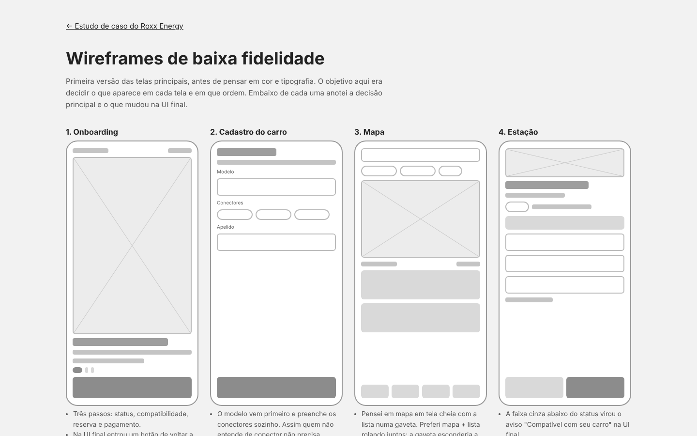
Tema escuro porque o app é muito usado à noite e dentro do carro, onde tela clara ofusca. O verde elétrico significa "energia disponível" e aparece só em três lugares: ação principal, status livre e progresso da recarga. Se aparecesse em tudo, deixaria de chamar atenção. Ocupado é âmbar, fora de serviço é cinza. Vermelho fica só para erro e ação destrutiva.
#0A0F0D#1A2420#39FF88#FFC14D#FF6B6B#63C7FFSpace Grotesk nos títulos e números grandes (porcentagem, reais): tem um ar técnico e números bem legíveis. Inter no texto e nos rótulos, porque lê bem em 12–14px, o tamanho dos metadados das estações.
Mostra os kW, que é o que o motorista compara primeiro. A cor diz o status e o rótulo acessível diz tudo por extenso.
Badge com cor, bolinha e texto, mais "atualizado há X min".
Em estação, reserva e pagamento, o botão principal fica fixo ao alcance do polegar.
"Reportar problema" abre um formulário curto (conector e o que aconteceu). O relato aparece na estação para os próximos motoristas e vai para o operador.
Encerrar recarga e cancelar reserva. O foco começa no botão seguro.
Todos os tokens e componentes, com todos os estados, estão no design system.
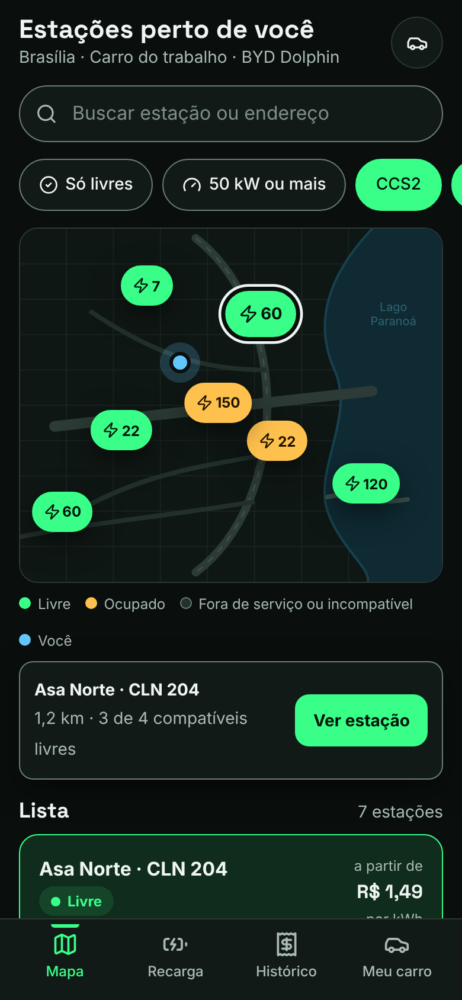
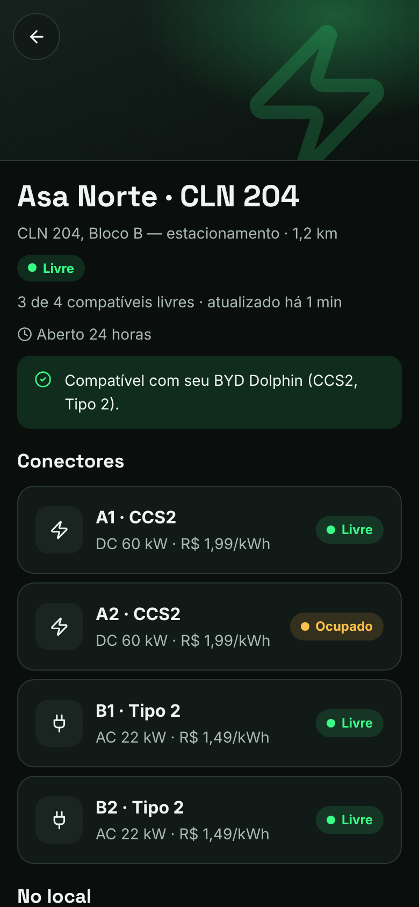
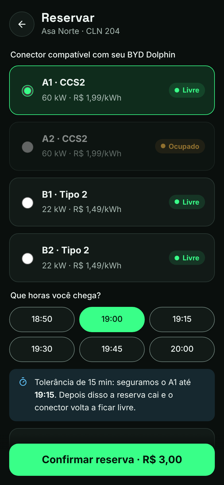
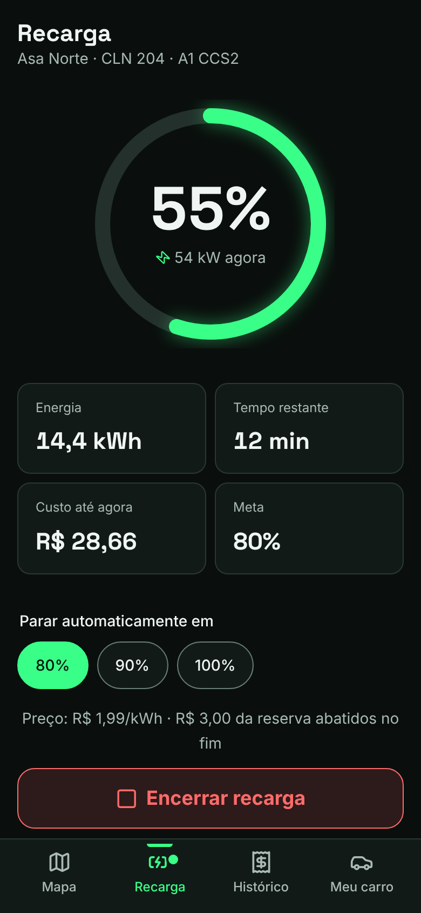
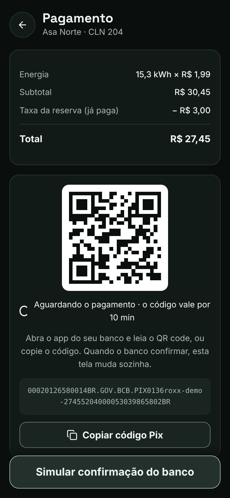
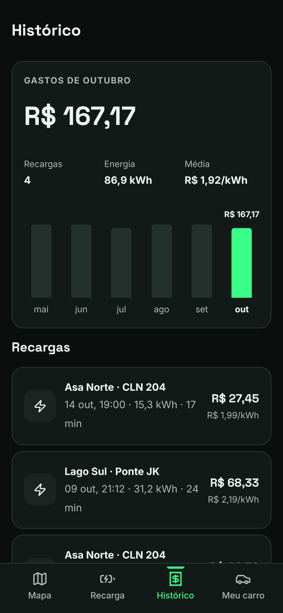
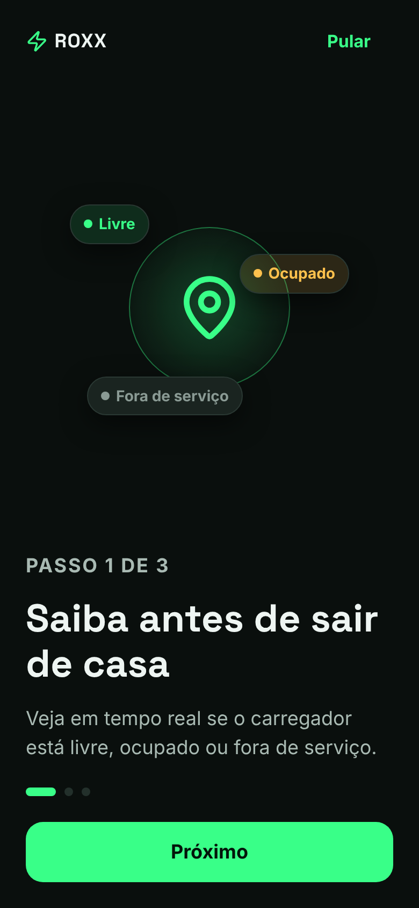
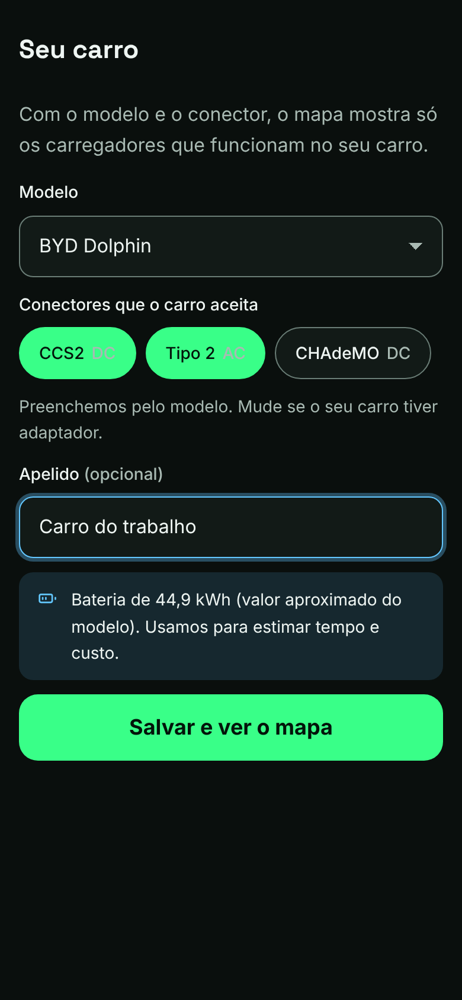
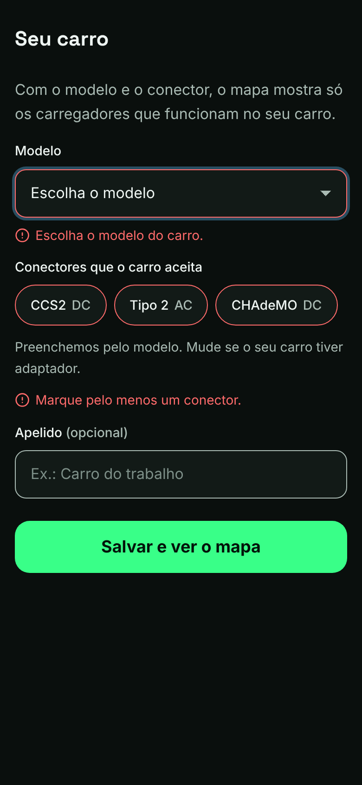
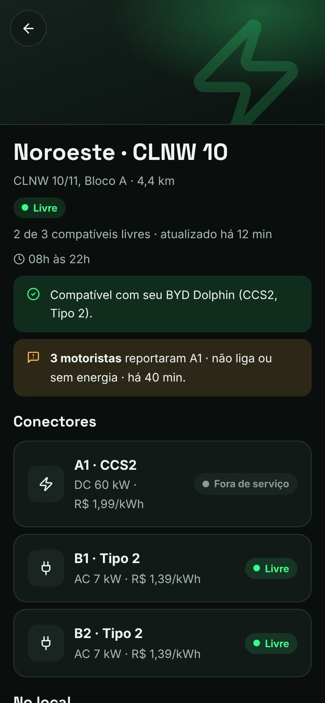
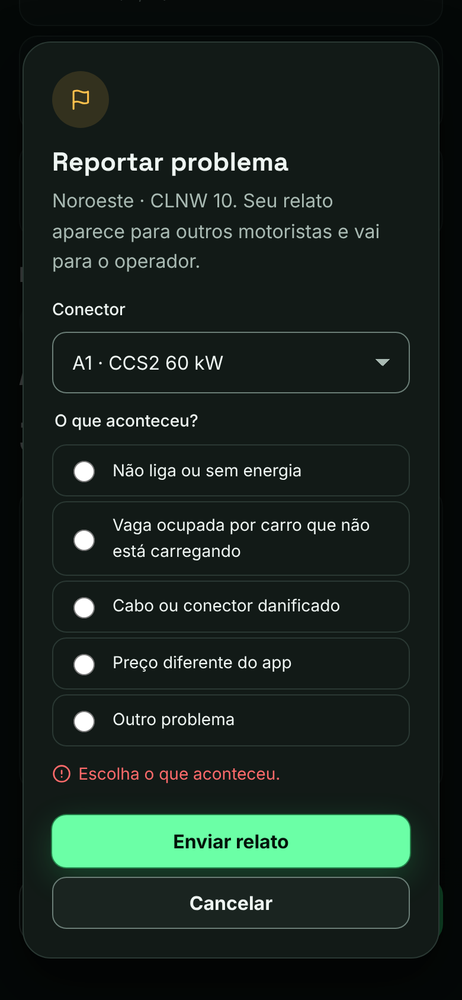
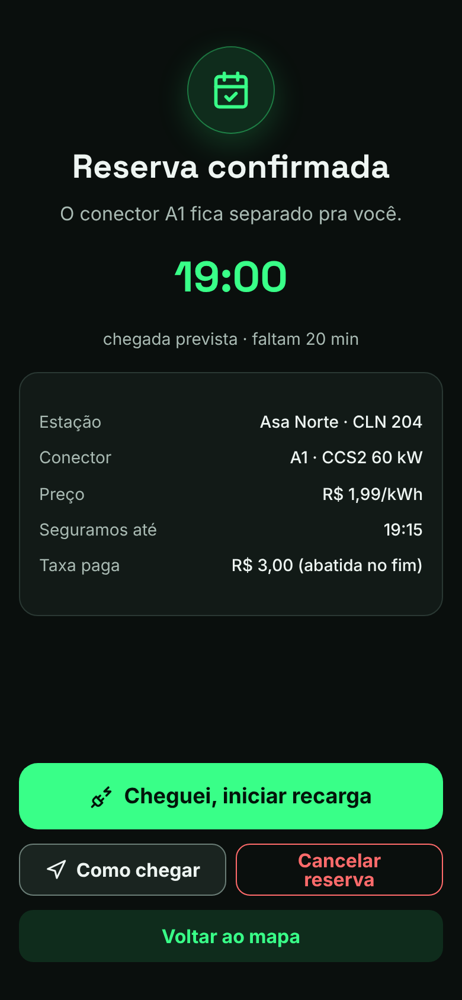
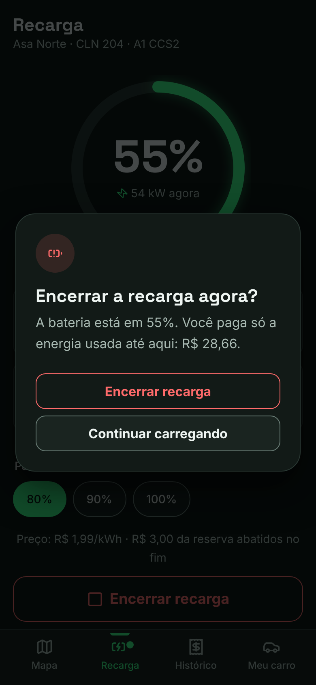
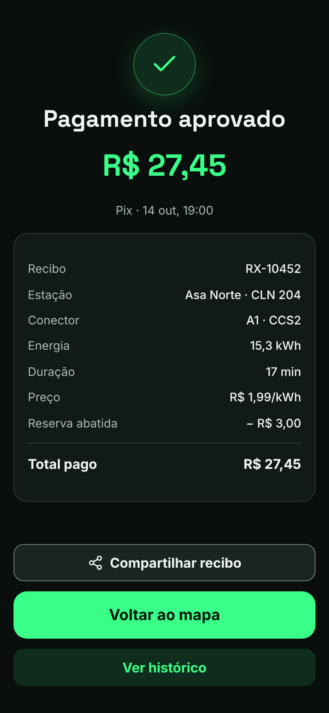
Calculei o contraste de cada par de cores usado no protótipo com a fórmula de luminância relativa da WCAG 2.1. Todos passam no nível AA.
| Par | Razão | Mínimo AA | Resultado |
|---|---|---|---|
Texto #EEF5F2 sobre fundo #0A0F0D | 17,46:1 | 4,5:1 | Passa |
Texto secundário #A9BAB3 sobre fundo | 9,53:1 | 4,5:1 | Passa |
Texto secundário sobre superfície #1A2420 | 7,87:1 | 4,5:1 | Passa |
Placeholder #7D8F88 sobre superfície #121A17 | 5,19:1 | 4,5:1 | Passa |
Texto #03140A sobre botão verde #39FF88 | 14,29:1 | 4,5:1 | Passa |
Âmbar #FFC14D sobre superfície | 10,95:1 | 4,5:1 | Passa |
Vermelho #FF6B6B sobre fundo | 6,96:1 | 4,5:1 | Passa |
Borda de campo #6A7D76 sobre superfície | 4,05:1 | 3:1 (não texto) | Passa |
Anel de foco #63C7FF sobre fundo | 10,25:1 | 3:1 (não texto) | Passa |
fieldset e legend.<dialog>, que prende o foco e fecha com Esc.Com o protótipo pronto, passei por todas as telas com as 10 heurísticas de Nielsen. Avaliei sozinho, então isso não substitui teste com usuário: serve para pegar os problemas mais óbvios antes de chamar alguém. Gravidade de 0 (não é problema) a 4 (catástrofe).
| Heurística | O que encontrei | Grav. | O que fiz |
|---|---|---|---|
| 1. Visibilidade do status | O pin do Noroeste mostrava "60 kW", mas o carregador de 60 kW estava fora de serviço. | 3 | O pin agora considera só conectores compatíveis funcionando. |
| 1. Visibilidade do status | No Pix não havia sinal de que o app esperava o pagamento, nem da validade do código. | 2 | "Aguardando o pagamento · o código vale por 10 min". |
| 2. Mundo real | "R$ 1,49 por kWh" no card era o preço do conector mais barato, mas parecia o da estação toda. | 2 | Agora aparece "a partir de". |
| 3. Controle e liberdade | Voltar em todas as telas, "Desfazer" no cancelamento e confirmação ao encerrar. | 0 | Nada a corrigir. |
| 4. Consistência | "Veículo", "Seu carro" e "Trocar veículo" para a mesma coisa. | 1 | Padronizei em "carro". |
| 5. Prevenção de erros | "Reservar" desabilitado com motivo escrito. Metas abaixo da carga atual desabilitadas. | 0 | Nada a corrigir. |
| 6. Reconhecer, não lembrar | A aba Recarga mostra a reserva ativa com horário e prazo. | 0 | Nada a corrigir. |
| 7. Eficiência | Quem carrega sempre no mesmo lugar repete mapa → estação → reserva toda vez. | 1 | Foi para os próximos passos. |
| 8. Minimalismo | O ponto "Você está aqui" ficava escondido atrás de um pin. | 1 | Mudei a posição e a camada. |
| 9. Recuperar de erros | As mensagens de erro apareciam antes de o usuário fazer qualquer coisa: o display: flex do componente vencia o atributo hidden. | 3 | Corrigi na base do CSS. Erro só aparece depois de enviar. |
| 10. Ajuda | Quem nunca carregou não sabe o que é CCS2 ou CHAdeMO. | 1 | Foi para os próximos passos. |
Oito achados, seis corrigidos. Os dois mais graves eram justamente sobre o centro do produto: confiar na informação do carregador e entender o que deu errado.
Próximo passo, ainda não realizado
Cinco motoristas que carregam em ponto público pelo menos uma vez por semana, pelo menos dois sem carregador em casa. Sessões de 30 minutos com o protótipo no celular do participante.
| # | Tarefa | Sucesso quando |
|---|---|---|
| 1 | "Você acabou de instalar o app. Deixe ele pronto para o seu carro." | Cadastra o modelo e chega no mapa |
| 2 | "Encontre um lugar livre agora que sirva no seu carro." | Abre uma estação com conector compatível livre |
| 3 | "Garanta a vaga para chegar às 19h." | Confirma a reserva com o horário certo |
| 4 | "Você chegou. Comece a carregar e pare quando achar que está bom." | Inicia e encerra a recarga |
| 5 | "Pague com Pix." | Chega no recibo |
| 6 | "Quanto você gastou com recarga este mês?" | Encontra o total no histórico |
Métricas: taxa de sucesso, tempo por tarefa (meta de menos de 1 minuto na tarefa 2), erros, SEQ depois de cada tarefa e SUS no fim.
Perguntas-chave: você confiou no "livre"? O que entendeu da taxa de R$ 3,00? Quinze minutos de tolerância bastam? O que falta para usar só este app?
O roteiro completo está em docs/06-roteiro-de-teste.md (abre no GitHub).
Se o Roxx fosse lançado, estes seriam os números que eu acompanharia. Nenhum deles existe ainda; são as metas que eu definiria.
| Métrica | Por que importa | Meta inicial |
|---|---|---|
| Tempo de abrir o app até confirmar a reserva | É o objetivo do produto | Menos de 1 minuto |
| Chegadas em que o conector reservado estava funcionando | Mede se o status é confiável, que é a dor principal | Acima de 95% |
| Reservas que viram recarga | Mostra se a tolerância de 15 minutos e a taxa fazem sentido | Acima de 85% |
| Relatos de problema confirmados pelo operador | Separa relato útil de ruído e calibra o peso do relato no status | Acompanhar, sem meta no início |
| Motoristas que voltam a carregar pelo app no mês seguinte | Indica se o app virou o lugar padrão para carregar | Acima de 60% |